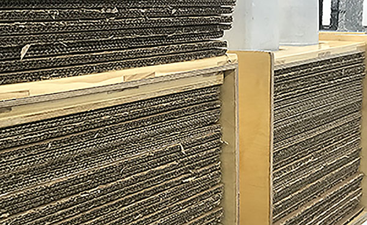
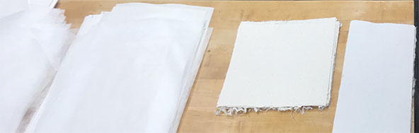

It's important to open the system and unload the handmade paper as soon as you come in, so that we can load new handmade paper into it for the new work day. On March 7th, my Papermaking class began Chancery Papermaking. A papermaking technique dating back to 11th century medieval Europe, performed by only a 3 person team, my class used similar processes in order to make over 100 sheets of paper in 4 hours.

10am
Separating Handmade Paper by Quality and Weight

11am
Inking the Press
The 325G Printing Press has to be manually inked by rolling the cylinder across the inking plate back and forth. I'm glad my printing project wasn't on that press. :)